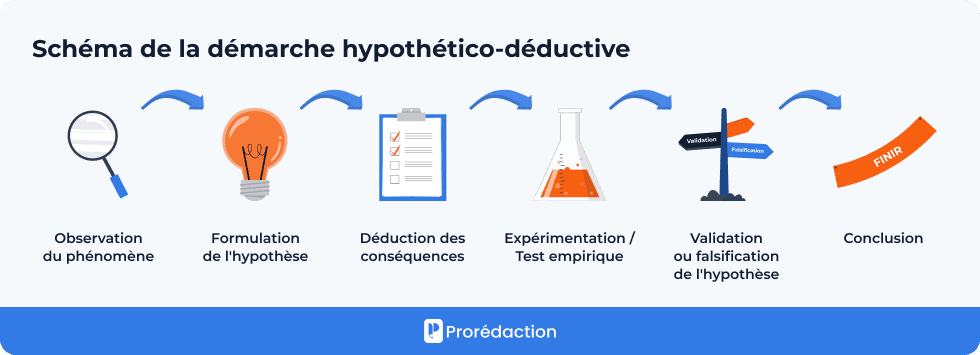
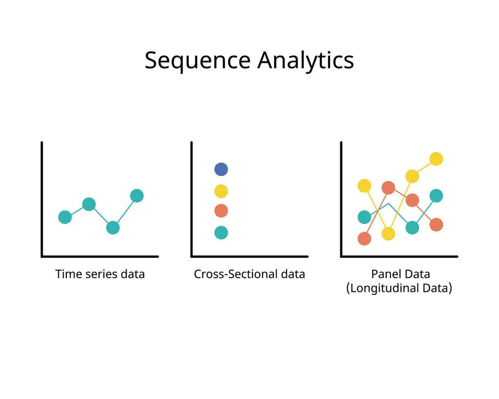

TD 1 — Prise en main d’EViews
1 Introduction
L’économétrie s’inscrit dans une démarche scientifique dite hypothético-déductive, telle que l’a définie Karl Popper.
Cette démarche comporte trois étapes :
- Modélisation : formuler une théorie économique et la traduire sous forme de modèle.
- Vérification empirique : utiliser l’économétrie pour confronter le modèle aux données.
- Validation ou révision : confirmer ou modifier la théorie selon les résultats.

En pratique, l’économétrie est une méthode d’analyse des données économiques qui, grâce aux outils de la statistique et des mathématiques, permet de mettre en évidence les relations entre variables.
Elle poursuit plusieurs objectifs :
- tester la véracité empirique d’une théorie ;
- prévoir l’évolution d’un phénomène économique ;
- estimer la valeur des paramètres d’un modèle théorique.
2 Corrélation et causalité
Une idée clé à garder à l’esprit : corrélation n’est pas causalité.
L’économétrie mesure des corrélations. Pour parler de causalité, il faut des arguments théoriques solides et, souvent, des méthodes spécifiques (variables instrumentales, expériences naturelles, etc.).
Pour s’en convaincre, on peut consulter le site Spurious Correlations qui illustre de fausses corrélations amusantes.
3 Principe de l’économétrie appliquée
Supposons que l’on veuille expliquer le nombre de buts marqués par un joueur de football.
On dispose d’une variable à expliquer (le nombre de buts) et de variables explicatives (poste du joueur, taille, club…).
L’économétrie cherche à identifier s’il existe une relation entre ces variables.
Avec un apport théorique préalable, une corrélation observée peut alors être interprétée comme un lien causal.
Dans ce cours :
- les concepts théoriques sont présentés en cours magistral (M. Brun) ;
- la mise en pratique se fait en Travaux Dirigés, en utilisant le logiciel EViews.
4 Organisation des TD
Le cycle de TD se déroule en plusieurs séances :
- Présentation et prise en main d’EViews
- Gestion et exploration d’une base de données
- Régression économétrique
- Tests d’hypothèses économétriques
- Tests d’hypothèses économiques
- Variables instrumentales
- Contrôle continu
- Correction du contrôle
5 Types de données en économétrie
Les données utilisées peuvent être de trois grands types :
- Données transversales : observations sur plusieurs individus à un instant donné (ex. : un ensemble de pays en 2024).
- Données temporelles : observations sur un même individu ou pays à plusieurs dates.
- Données de panel : combinaison des deux précédentes, plusieurs individus observés sur plusieurs périodes.

Dans le cadre de ce premier TD, nous travaillerons uniquement sur des données transversales.
6 Le logiciel EViews
EViews est un logiciel d’économétrie développé par Quantitative Micro Software.
Parmi les autres logiciels largement utilisés, on peut citer Stata, R, Rats, Matlab, ou encore Limdep.
6.1 Avantages
- Interface graphique simple d’utilisation ;
- Performant pour l’analyse de séries temporelles.
6.2 Inconvénients
- Logiciel spécialisé uniquement en économétrie ;
- Nécessite un pré-traitement des données (peu flexible pour la manipulation de bases).
7 Travailler sous EViews
7.1 Environnement et logique de fonctionnement
On peut travailler sous EViews de trois manières :
- Interface graphique : menus et fenêtres.
- Fenêtre de commande : en tapant directement les instructions.
- Programme (.prg) : regroupement des commandes dans un script.
Dans ce TD, nous utiliserons surtout les deux premières méthodes, plus intuitives.
7.2 Types de fichiers
- Fichier texte (.txt) ou Excel (.xls) : contient la base de données d’origine.
- Fichier workfile (.wf1) : enregistre votre travail et vos objets EViews.
- Fichier programme (.prg) : stocke des commandes, non utilisé dans ce TD.
7.3 Types d’objets
Dans un workfile, on trouve différents objets :
variables numériques, listes de texte, équations, graphiques, coefficients et résidus estimés, scalaires et matrices.
Pour consulter un objet, il suffit de double-cliquer sur son icône.
8 Création d’un workfile
Avant d’importer une base de données, il faut créer un workfile :
- Menu : File → New → Workfile.
Trois structures sont possibles :
- Unstructured/Undated (pour des données transversales).
- Data Range : nombre d’observations (ex. nombre de pays).
- Dated–regular frequency (pour des séries temporelles).
- Frequency : fréquence (annuelle, mensuelle, …).
- Start date et End date : période couverte.
- Balanced Panel (pour des données de panel).
- même principe que pour les séries temporelles, en précisant le nombre d’individus.
Options complémentaires : - Name : nom du workfile ; - Page : numéro de page.
Sauvegarder le workfile :
- première fois via File → Save as,
- ensuite File → Save ou Ctrl + S.
Pour rouvrir un workfile existant : File → Open → Workfile.
9 Importation de données
Avant l’importation, assurez-vous que le fichier Excel ne contient aucune formule.
Ensuite :
- Fermez la feuille Excel.
- Menu : File → Import → Import from file.
- Sélectionnez la base de données.
Une première fenêtre permet de choisir la plage de données : - Predefined Range si aucun changement n’est nécessaire ; - Custom Range pour définir précisément les cellules.
Une seconde fenêtre permet de : - indiquer le nombre de lignes d’en-tête (Column headers) ; - modifier le nom, le type et le label des variables (Column info).
Une troisième fenêtre offre des opérations plus avancées, par exemple lier plusieurs bases de données.
Une fois l’importation terminée, sauvegardez le workfile.
9.1 Création du workfile et importation en une seule étape
Il est aussi possible de créer le workfile et d’importer les données directement : - Menu : File → Open → Foreign Data as Workfile.
Avantage : gain de temps.
Inconvénient : la base doit être parfaitement préparée en amont.
Ce premier TD avait pour objectif de découvrir l’économétrie, de comprendre la logique d’EViews et de préparer la base de données pour les TD suivants.